3.-5. 7. 2026.
Napisala: Jana Požeg Krišković
Fotografije: Fero, Joviša, Edo, Katarina
Zaželjela sam se malo spuštanja u jame, kad ugledam Edinu poruku u grupi za izlet na Dabarskim kukovima.
Bez previše razmišljanja, javljam Edi da bih im se pridružila.
Tek kasnije shvaćam da se tu slave neki rođendani i pitam se jesam li se ugurala na proslavu i hoće li biti
uopće nekoga koga poznajem. Dodaj k tome još i težak tjedan i dobiješ recept za sumnju. Da ne spominjem da mi je rečeno da krenem u 6:30 u subotu kako bi izbjegli najveće vrućine prilikom rekognosciranja (zapamtite ovu info za kasnije), a u petak navečer sam imala jedan rođendan u Zagrebu. Ipak, odlučujem nastaviti s planom i ne odustati. Najbolja odluka ikad.
Kasnije sam čula da se i Edo raspitivao tko je ova školarka kaj brije ići na rekognosciranje usred Velebita,
da li je ok itd. Dakle, iako je bilo sumnje s obje strane, mislim da nitko nije ostao razočaran.
I tako krećem ja u 6:45 iz Zagreba i gugl maps, umjesto očekivanih 2 i pol sata, do destinacije pokazuje 3 sata.
Već me hvata trta da ću kasno doći ekipi, da ćemo morati po najvećoj žegi kretati na teren, pa stisnem malo gas (čitaj: max 130 km/h u Opel Corsi) i na kraju ipak stižem za 2 i pol sata. Pod Filipovim kukom razbuđivanje je u tijeku, piju se kavica i rakijica te se doručkuje. Imala sam čast upoznati simpatične kolege speleologe iz Speleološkog društva Ponir Banja Luka (ako netko nije iz tog društva oprostite mi), a i ostale Velebitaše. Nakon “kratkotrajnog” druženja, klopanja i planiranja, krećemo na teren iza podneva (dobro da sam stigla ujutro na vrijeme xD).
Neki su pošli u Crno vrilo, neki su ostali u kampu, a mi (Edo, Fero, Matori, Dejo, Ela, Joviša i ja) smo krenuli prema PD Ravni Dabar. Edo nas je podijelio u dvije ekipe: 1. Edo, Matori i Joviša, 2. Dejo, Ela, Fero i ja. Plan je bio da svaka ekipa pođe u potragu za jednom jamom kako bi bili produktivniji. Super je to plan bio, ali na pola puta do Ravnog Dabra Dejo i Ela primjećuju da mi opremu sa sobom nismo uzeli! Tu informaciju priopćujemo Edi ispred planinarskog doma, a Edo se prima za glavu. A nema veze, šta je tu je. Ići ćemo svi skupa kao jedna ekipa😊
Jame koje tražimo bi trebali biti uz Vranjkovića kuk, pa smo se uputili prema njemu. Trebalo ga je obići s obje strane, i tako smo Edo i ja pošli njemu slijeva, a ostali s desna. Teren je onako, zanimljiv, ima svega: planinarenja, penjanja, otpenjavanja, a lijepo okruženje sve to olakšava. I tako nakon malo više od sat vremena rekognosciranja, Edo nalazi jamicu (navodno Jama nova). Ne izgleda preduboko, ali se vraćamo po ostatak ekipe. Kad smo se vratili do mjesta na kojem smo se i razdvojili od ostataka ekipe, vidimo njih kako lijepo leže i drijemaju na mekanoj velebitskoj travici, i naravno, pridružimo im se. Nakon kratke, ali fine pauze, nastavljamo svi skupa do te male jamice. Šaljemo Matorog da se spušta u nju, Joviša ju crta, ima nešto više od 5 metara. Za to vrijeme Dejo, Fero i ja nastavljamo prema kooordinatama druge jame (navodno Jama u stijenama). Niti 20 minuta od prve jame, Fero nailazi na veliku pukotinu u kuku. Ja sva uzbuđena dolazim do njega i počinjemo tražiti kamenje. Baca se prvi kamen, pogađa nekakvu policu.
Baca se drugi kamen – ide dublje. Koliko su napete te sekunde kad čekaš zvuk kamena kako udara o dno jame 😀
U tom trenutku sam se osjećala ko neki tinejdžer koji s nadvožnjaka baca kamenje na automobile. Samo sam htjela još! Zatim dolazi Dejo i pridružuje se bacanju kamenja. Moje neiskusno uho bi toj jami odmah dalo 100 metara, no Ferina i Dejina iskusna vleha kažu da je duboka ipak oko 50 metara.
Matori je opremio jamu, nakon njega sam ja išla glumiti točku za crtanje, a Joviša se spuštao treći i crtao je jamu. Nakon crtanja, jama ipak ima nešto više od 50m, ali se ne sjećam točnog broja. Jako je uzbudljiv osjećaj ići u neku jamu, znajući da si među prvima koji ju vidi. Preporučam svim školarcima! 😀
I tak smo se mi umorni i zadovoljni uputili nazad za kamp i fešta je mogla započeti! Doduše, dvije fešte! Neki lokalci su slavili rođendan pa smo se svi okupili oko vatrice, i mogu reći da su speleolozi jači igrači. Bilo je tu puno pjesme, dobre svirke, smjeha, fine hrane, i tako sve do sitnih sati. Neki nisu ni otišli spavati, pogađajte tko. 😀
Nedjelja ujutro je lagana i usporena. Neki idu za BiH, neki za Karlobag na kupanac, neki za Zagreb. I tako smo se svi razišli u vedrom i malo snenom tonu. Nek’ ovo bude podsjetnik da i kada sumnjaš u svoje planove, da ih odradiš unatoč sumnji. Ugodno ćeš se iznenaditi.
Ekipa na izletu (??, ako sam nekog fulala oprostite) : Edo, Katarina, mali Roko, Ana Dimitrijević, Mateja Dimitrijević, Dimitrije Dimitrijević aka Matori, Čedo, Fero, Ana Bakšić, Lacko, Darkec, Ela, Dejo, Joviša, Nenad aka Dexter, Tibor i njegova familija, Bojan, Mirko, Mirkov ujak (Ponir).
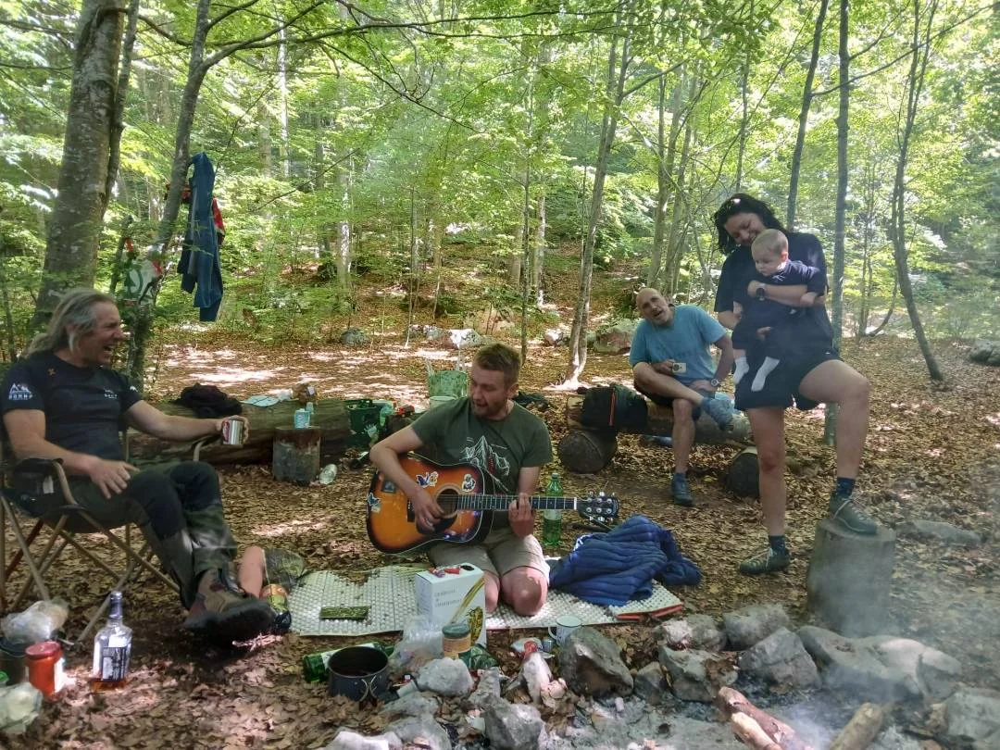
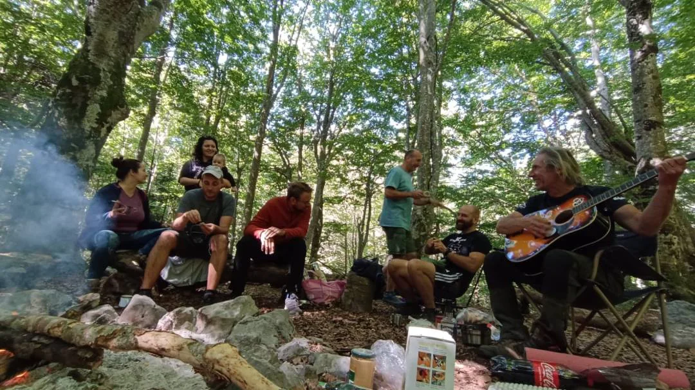
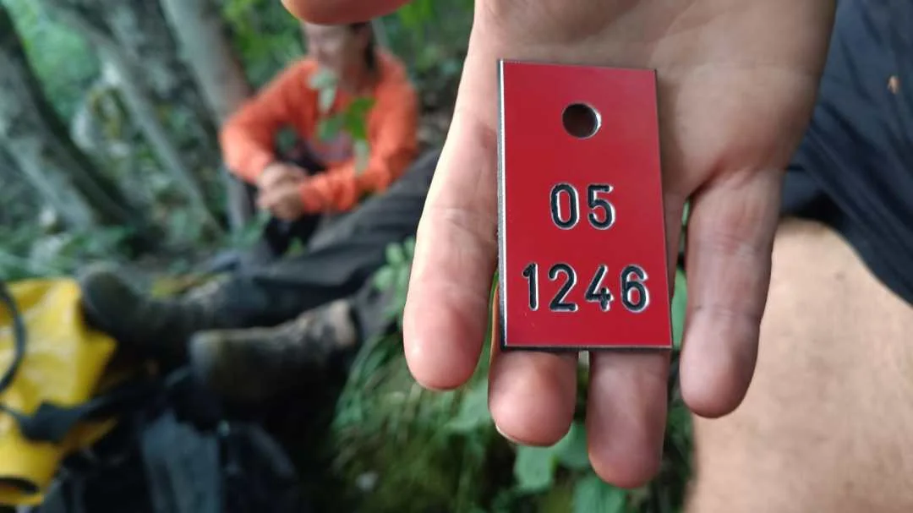
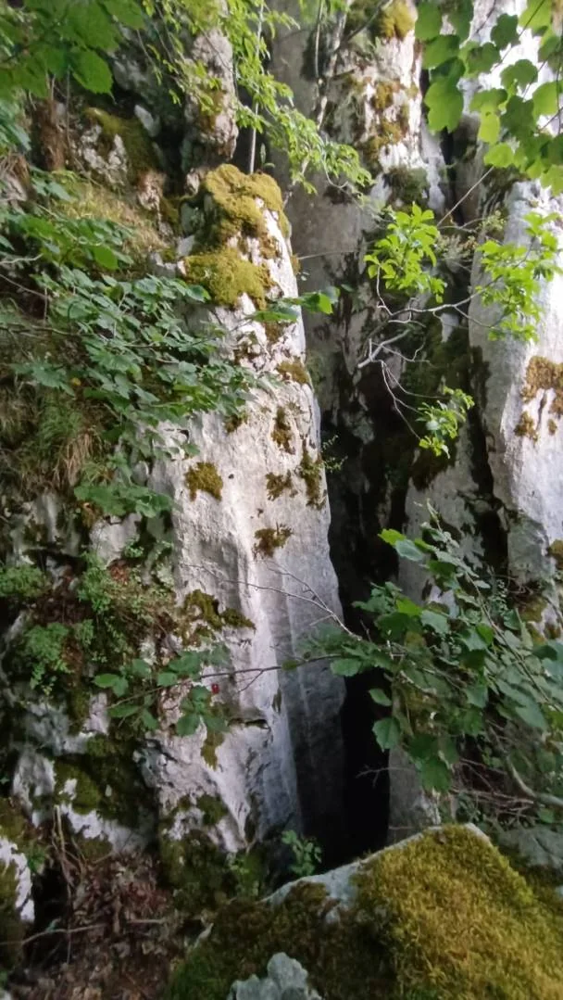
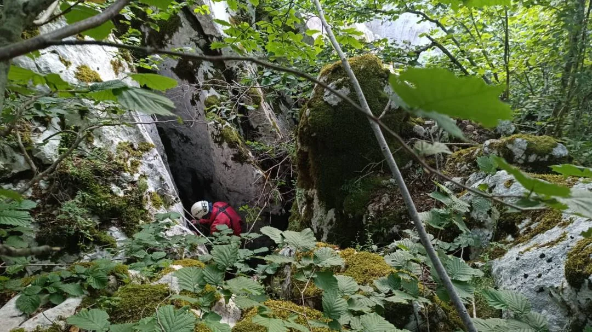
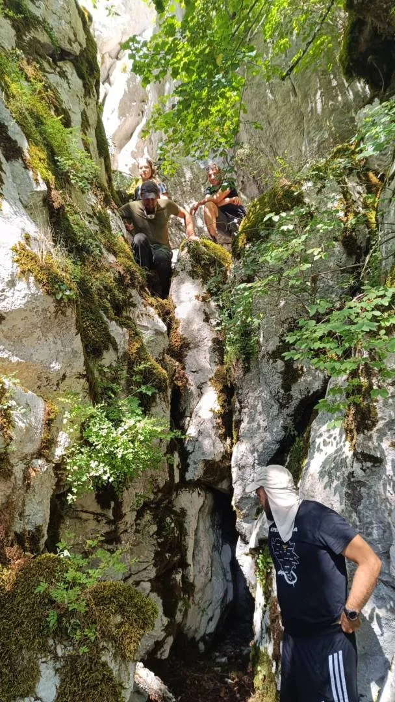
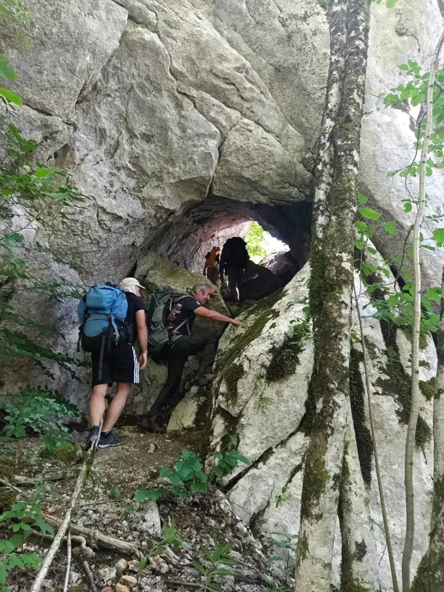
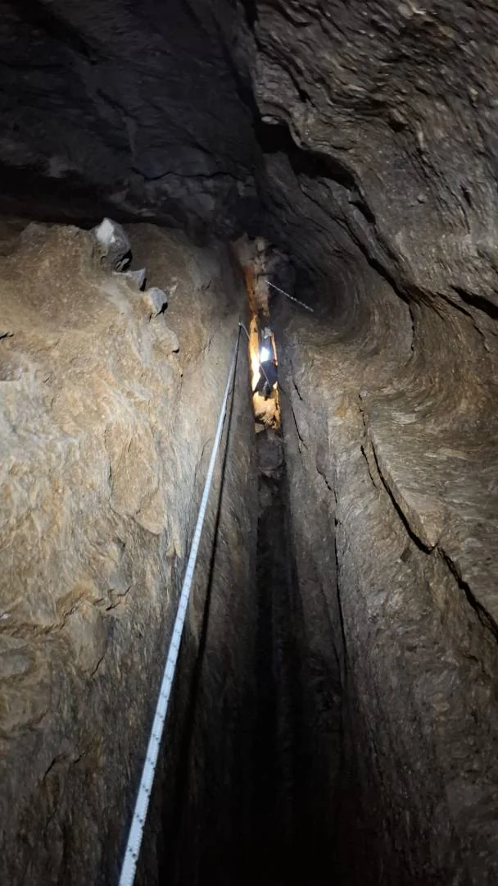
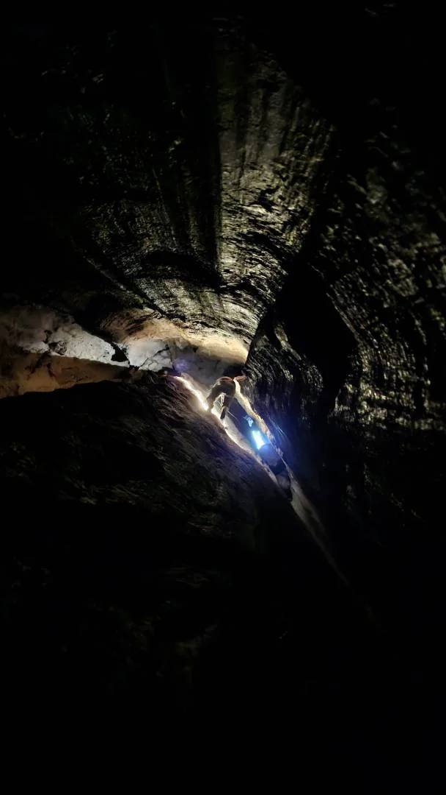
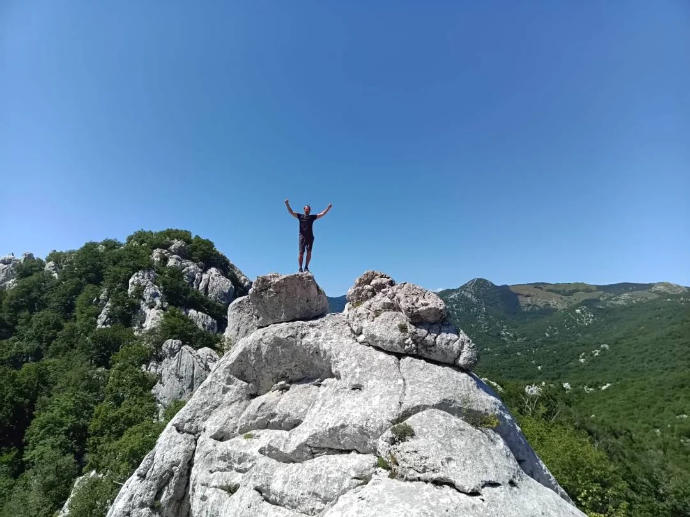
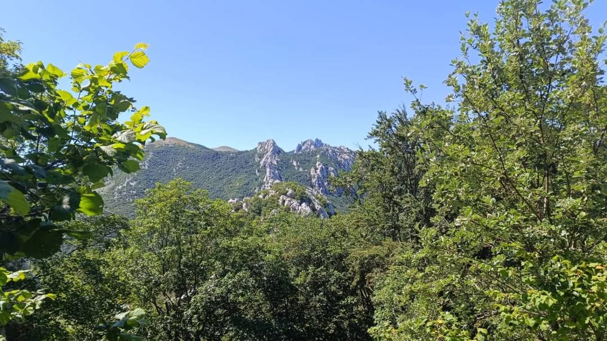